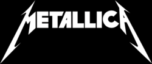

A forrásokat itt találod
A Metallica amerikai thrash metal zenekart James Hetfield és Lars Ulrich alapította 1981-ben Los Angelesben. Az utóbbi évtizedek egyik legsikeresebb együttese, az 1980-as és az 1990-es évek meghatározó zenekara.

Alapulása